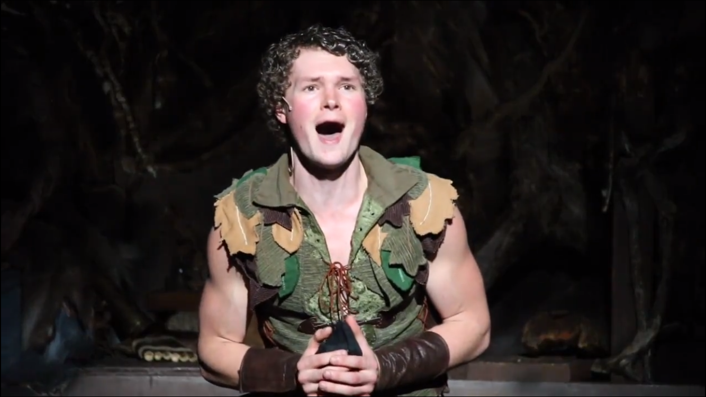

The amount of thought he puts into even the smallest task is seen through everything he does. No word is said and no task is done without careful thought. Being able to have even the smallest ounce of idea what those thoughts are like is such a blessing. To be the person he shares everything with is one of my greatest joys. He will never know how much I cherish everything he tells me, no matter how small he may think it is. From what his day was like, to how his big audition went, and everything in between. Hearing the intricacies of his precious thoughts will always be one of the best parts of my days.
My Love
Forever my always

Somehow he manages to be so strong, yet so gentle in everything he does. I wonder so often how he manages to balance it so perfectly. From loving all things and all people (something I especially admire) so gently but so firmly is one of the best feelings and I am so thankful to be on the recieving end. From the way he talks of those he loves to the way he treats them, I will never understand how he does it. I strive to have such a gentle approach and love watching his example every day.


One of my favorite things is getting to see his goofy side. He is not only incredibly responsible but he refuses to let go of his young-heart. I so admire his willingness to carelessly have fun in whatever way that may be - playing with his nephews, embracing his character, or just messing around. I am so lucky to get to see the genuinity and the honesty in those moments that I cherish so much. I can't wait for him to share that and spoil our own children with his incredibly fun and whimsical heart.
To see someone you love work so hard to achieve something is such an indescribable experience. For one, when he sets out to achieve a task, those feelings of desire and motivation are passed onto me and I can't help but want what he does. His achievements and failures becomes mine and I never expected to experience the same feelings as when I set out to accomplish a task myself. I am astounded by his unfailing dedication to what he loves: performing, building, and everything else. Peter Pan has been such a rewarding experience for him and me and I am so thankful for getting to be a part of his journey.


When I see his eyes light up at the sight of a precious little girl or boy, my heart skips a beat. To share that with him is such a blessing. One of my absolute favorite qaulities he has is his ability to connect with kids of any age. I can't begin to describe my excitement of starting a family with him. Our children will be blessed beyond their realization with such a kind, patient, thoughtful, and purely fun father. My heart yearns for the day that we become parents and have children of our own to love and care for. Knowing that he shares that wish with my gives me such a sense of contentment and peace for the future.
Whether it is humoring my vast love for peonies or coffee, or constantly taking my feelings into consideration, he never fails to think of others. His acts of kindess are hardly random and continue to amaze me. The number of times he has beared a burden in order to help someone else or make their lives easier is so humbling to witness. He is such a blessing to so many and he hardly knows how he is appreciated. Our children will have the best father to look up to, and he will be the best husband to look up to. He makes me a better person and I am more than thankful that he has opened that kind heart of his to me.

Words can not begin to describe what it is like to be loved by him. He makes me feel beautiful, safe, and so loved. He has all of my heart and forever will keep it. I have loved the last two years being his and only his, but I even more so am looking forward to the rest of our lives together.